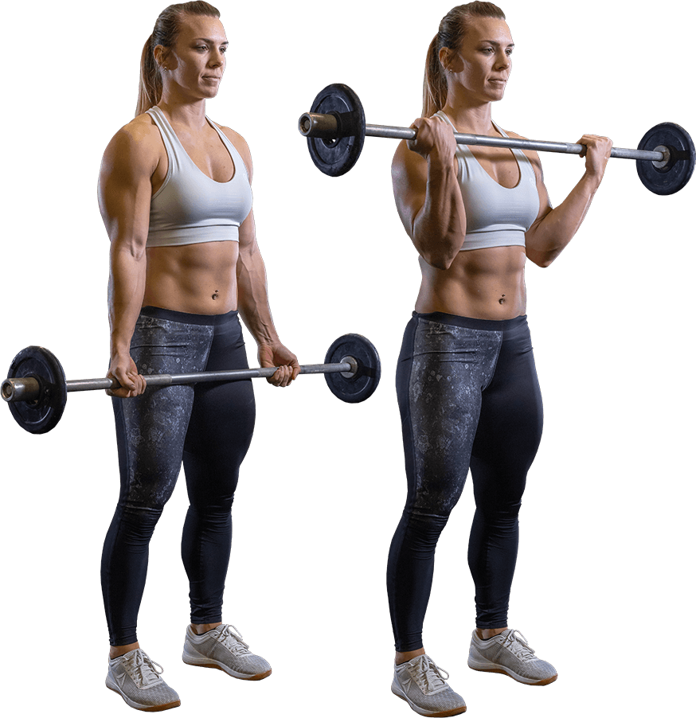

Remek helyszín
Nincs korhatár

Komoly kihívások
Tapasztalataim
Véleményem szerint a Power challenge egy remek verseny. Komoly megpróbáltatás lehet minden személynek, aki szereti a súlyzós edzéseket. Remek a hangulat, és egyáltalán nem érezhető, hogy ez egy verseny. Az emberek között egyáltalán nincs rivalizálás, barátias a légkör. Az utolsó gyakorlatok végére nagyan közel álltam az ájuláshos, szerencsére semmi baj nem történt. A biztonság kedvéért jelen volt egy orvosi brigád.
Helyszín
Anyagylaföldi sportközpont
Cím: Budapest, Rozsnyay utca 4, 1139
Beosztás
A versenyen a résztvevőket több kategória szerint csoortosítják. Például: súlycsoport, korcsoport, nehézség és versenyszám.
Súlycsoportok
Női:
- -65kg
- +65kg
Férfi:
- -75kg
- -90kg
- -110kg
- +110kg
Korcsoportok
- Ifjúsági (19 évesig)
- Junior (20-23 évesig)
- Open
- Masters I. (40-49 évesig)
- Masters II. (50-59 évesig)
- Masters III. (60-69 évesig)
- Masters IV. (70-79 évesig)
- Masters V. (80 év felett)
Nehézség
- Amatőr
- Versenyző I
- Versenyző II
- Profi
Versenyszámok
- Komplett
- Guggolás
- Fekvenyomás
- Felhúzás
- Mellről nyomás
- Húzódzkodás
- Bicepsz
Súlyok
A versenyen előre meghatározott súlyokat kell használni, ezeket a nem, az életkor, a testsúly, és a nehézség alapján számolják ki a mérlegelés után.
Ha szeretnéd előre kiszámolni a súlyokat az alábbi linken megteheted.
Pontozás
A verseny lényege, hogy minél több ismétlést hajtsunk végre a kijelölt súlyokkal.
Díjazás
Egyéni komplett verseny
- Arany minősítés 100 ismétlés
- Ezüst minősítés 85 ismétlés
- Bronz minősítés 70 ismétlés
Egyéni fogásnemenként
- Arany minősítés 30 ismétlés
- Ezüst minősítés 20 ismétlés
- Bronz minősítés 10 ismétlés
Súly és korcsoport szerint az 1-3. helyezett érmet és oklevelet kap. Emellett abszolút díjazás is van korcsoportonként, az 1-3. helyezet kupát és ajándékutalványt kap.
Gyakorlatok
Általános szabályok
- A Bírói vezényszavak minden gyakorlat esetén az elvégzett érvényes ismétlések száma
- A Komplett versenyszám kötelező végrehajtási sorrendje: Guggolás, Fekvenyomás, Felhúzás, Mellről nyomás, Húzódzkodás/Bicepsz
- A gyakorlatok közötti pihenő idő MAXIMUM 5 perc
Guggolás
Kötelező versenyruházat:
póló, rövid nadrág.
Használható felszerelés:
térdgumi, öv, csuklóbandázs. PROFI kategóriahasználhat még térdbandázst.
Gyakorlat végrehajtása:
nyújtott térddel kell indítani minden gyakorlatot és addig kell leguggolni, hogy atérd és a csípő forgási pontja vizszíntes legyen. Onnan lehet felállni. Minden egyes guggolást bírói vezényszóra szabad újra megkezdeni (érvényes ismétlésekszáma), melyet a bíró akkor ad meg, ha a kiindulási pozíció rendben (azaz nyújtott a térd). A guggolások között legfeljebb 5 mp pihenő tartható. Ha ennéltöbbet vár valaki, a vezényszót követően, akkor vége a sorozatának.

Fekvenyomás

Kötelező versenyruházat:
póló, rövid nadrág.
Használható felszerelés:
öv, csuklóbandázs.
Gyakorlatvégrehajtása:
nyújtott könyökkel kell elindítani a gyakorlatot és azzal is kell minden egyes nyomást befejezni. A mellet érintenie kell a rúdnak.Fogásszélesség legfeljebb 81 cm (ezen belül kell fogni a rúdat). A rúdat át kell fogni a hüvelyk ujjal. A rúd mellen történő pattintása tilos, érvénytelen. Afenéknek a paddal a gyakorlat közben folyamatosan érintkeznie kell. A talp valamely részének a talajjal folyamatosan érintkeznie kell.
Felhúzás
Kötelező versenyruházat:
póló, testhez simuló nadrág, és térdzokni (hosszú nadrág esetén nem szükséges), cipő (balettcipő is elfogadható).
Használható felszerelés:
térdgumi, öv, csuklóbandázs, gurtni.
Gyakorlat végrehajtása:
Szumó felhúzás nem megengedett! a földről kell felhúzni a súlyt, úgy hogy a végén nyújtott legyen a térd és a kar. Ekkor a bírói vezényszóra (érvényes ismétlések száma) meg lehet kezdeni a leengedést. A súlynak érintenie kell a talajt és meg kell állítani, utána lehet kezdeni az új gyakorlatot. A súlyt a földről pattintani tilos, érvénytelen. A súlyt a combon segítő szándékkal megtámasztani érvénytelen. Az ismétlések között legfeljebb 3 mp pihenő tartható, mely közben a rúdat elengedni tilos. Ha ennél többet vár valaki, akkor vége a sorozatának.

Mellről nyomás

Kötelező versenyruházat:
póló, rövid nadrág.
Használható felszerelés:
könyökgumi, öv, csuklóbandázs.
Gyakorlat végrehajtása:
a földről kell felvenni a súlyt. Kiindulási pozíció, hogy a mell és az áll között kell legyen a rúd. Láblökéses nyomás megengedett, de a talp lent kell maradjon a földön. A gyakorlat nyújtott könyökkel való kinyomás esetén érvényes. Bírói vezényszót (érvényes ismétlések száma) követően lehet visszaengedni az áll alá. Leesik a súly (akár előre, akár hátra) akkor vége a sorozatnak (amikor leesik az nem számít teljesített gyakorlatnak).
Húzódzkodás
póló, rövid nadrág.
Használható felszerelés:
öv, csuklóbandázs.
Gyakorlat végrehajtása:
a gyakorlat nyújtott karral indul bicepsz fogással és addig kell felhúzni magad, hogy átláss a rúd felett (tehát a szem magassága el kell érje a rúdat). Aztán újra ki kell nyújtani kart. Láb nem érintheti sem a talajt, sem a húzódzkodó állványt, különben vége a sorozatnak. Bicepsz húzódzkodás a feladat, a rúd fogása választható (tenyér befelé vagy kifelé néz). Lendületvétel tilos. Széles fogás nem megengedett. A húzódzkodó állvány elengedése esetén vége a sorozatnak.
Bicepsz

Kötelező versenyruházat:
póló, rövid nadrág.
Használható felszerelés:
könyökgumi, öv, csuklóbandázs.
Gyakorlat végrehajtása:
a földről kell felvenni a súlyt. Kiindulási pozíció, hogy a mell és az áll között kell legyen a rúd. Láblökéses nyomás megengedett, de a talp lent kell maradjon a földön. A gyakorlat nyújtott könyökkel való kinyomás esetén érvényes. Bírói vezényszót (érvényes ismétlések száma) követően lehet visszaengedni az áll alá. Leesik a súly (akár előre, akár hátra) akkor vége a sorozatnak (amikor leesik az nem számít teljesített gyakorlatnak).